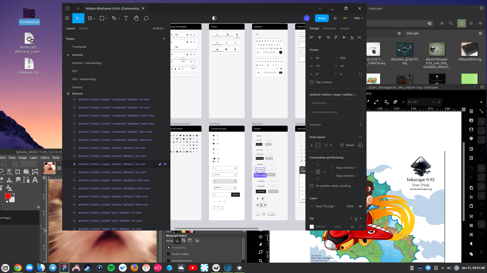

Informações Gerais
modificado em 29/01/2022
Me chamo Thiago Augusto, porém também conhecido como Jumper.
Sou muito interessado por tecnologia da informação e me interesso muito por organizar e orientar meus trabalhos.
Conhecimentos Principais
- Informática: Manutenção, infraestrutura e suporte ao usuário.
- UI/UX Designer, com desenvolvedor em front end HTML e CSS.
- Programação: Operações não muito complexas, porém bem desenvolvidas, costumo gostar muito de Bash.
Conhecimentos Relevantes
- Economia: Fundamentos economicos e situação dos mercados mundiais.
- Biologia: Sempre me atualizando em um geral, porém busco mais categorias sobre saude, genes, evolução, cerébro/mente.
- Filosofia: Direitos negativos e respeito absoluto a propriedade privada.
Outros
🐰 Ancap | 🐧 Linux user | TI | Design | ptbr | eng | BTC
Portfólio
modificado em 13/01/2021
Thunder Fórum de informática
Tudo começa com o TCC que produzi e entreguei o site Thunder fórum de informática em PHP, HTML e CSS.
Este foi meu primeiro trabalho sobre páginas web, estudando no Instituto Federal de Araquari no meu ensino médio com técnico de informática integrado, essa era a prova final, que passei. Este projeto foi um trabalho muito difícil, com um conjunto de novas descobertas.
Confira os códigos do site no repositório do Github e também de forma mais completa na Pasta do Google Drive
Mar&Cia Náutica
Criei o tema do site da empresa Mar&Cia Náutica para Wordpress. Tenho que admitir que programação não é meu forte, foi um trabalho difícil adaptar em Wordpress, então foquei no que sei fazer de melhor que é o design da página.
O site funciona muito bem de maneira responsiva, com o design focado em desktops e visando em segundo plano os dispositivos móveis.
SnakeTag
Produzi o site Snaketag como uma maneira de tentar vender meu serviço, mas não são muito bom nas vendas, e atualmente o site está disponivel no Github e eu fiz uma copia para neste site, confira clicando aqui.
Modelo de site
Este é um exemplo de modelo que elaborei, praticando. Foi um trabalho que construí durante uma semana aos poucos.
A primeira imagem é o que produzi, e a segunda é o site original, pode clicar para abrir em tela cheia.
Extras:
Logos Diversas
Cheguei a me aventurar em criar logos também, minha preferência é produzir elas em vetor, porém isso é somente um adicional.
Click on Robot
Um mini game que desenvolvi como projeto final do curso de Javascript, clique no robô para ganhar o jogo. Modo normal, difícil e insano.
Código também disponível no Github, clicando aqui.
Ferramentas que uso
modificado em 31/01/2021
Figma
Começei criando estilos de páginas diretamente no CSS e HTML, simplesmente criando e recriando os elementos, muito trabalho, tinha que ir atrás de ferramenta para criar os protótipos.
Indo atrás de um programa e acabei caindo no Inkscape, era muito interessante pois poderias trabalhar com vetores e posicionamento, porém não era feito para prototipagem.
Finalmente após minha amiga Cindy Lapaz me insistir novamente e me ensinar sobre o Figma, estou nele e é realmente ótimo.
Inkscape
A utilizo como é uma ótima ferramenta para desenha e editar vetores.
GIMP
Para editar imagens, conheçe Photoshop?! Equivalente e gratuito.
Linux Mint
Perante as ferramentas citadas, isto se torna interessante e relevante. Não uso ferramentas pagas, assim como meu sistema, sem pirataria e continuamente operante.

Carteiras para pagamentos
Nano
nano_17dpmcrisrk8ishzuhe66x5kps6ehqjrzd7ehgg9pz8qc5d1o9iaih9dnhmg
Bitcoin
bc1qhdxvvtdns5m6xzzhlqmxdte55yuat4augq7e2c
Links pessoais
Github: meu histórico de códigos HTML e CSS.
Linkedin: para verificar minha situação profissional atual.
Telegram: se tiver interesse em contato direto e rápido.
Twitter: estou lá de vez enquanto atoa, uso pouco, mas muito mais que Facebook e Whatsapp.